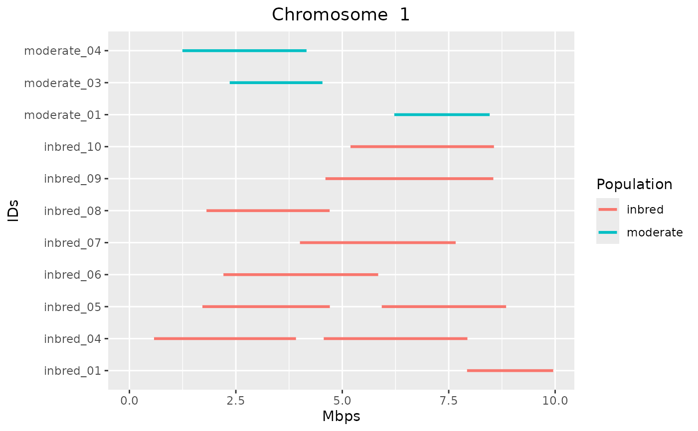
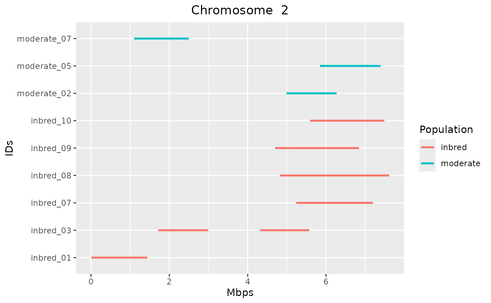
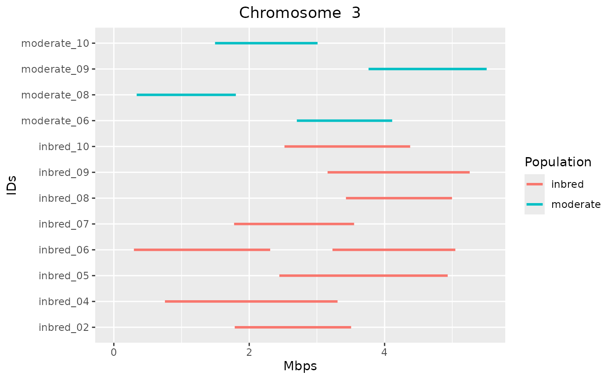

Detect runs of homozygosity using a sliding-window
Source:R/windows_indiv_roh.R
windows_indiv_roh.RdThis function looks for runs of homozygosity in a diploid genome with the
sliding-window algorithm of PLINK 1.9 (--homozyg), with the same
parameters and defaults. It is implemented natively in C++: all individuals
are analysed in a single pass over the genotypes.
Usage
windows_indiv_roh(
.x,
window_snp = 50,
window_het = 1,
window_missing = 5,
window_threshold = 0.05,
min_snp = 100,
min_kb = 1000,
max_kb_per_snp = 50,
max_gap_kb = 1000,
max_het = Inf,
subtract_1_from_lengths = FALSE,
n_cores = bigstatsr::nb_cores(),
...
)Arguments
- .x
- window_snp
the number of loci in each window (PLINK
--homozyg-window-snp, default 50)- window_het
the largest number of heterozygous genotypes in a window that is a hit (PLINK
--homozyg-window-het, default 1)- window_missing
the largest number of missing genotypes in a window that is a hit (PLINK
--homozyg-window-missing, default 5)- window_threshold
the smallest proportion of the windows that include a locus that must be hits for the locus to be in a run (PLINK
--homozyg-window-threshold, default 0.05)- min_snp
the smallest number of loci in a run (PLINK
--homozyg-snp, default 100)- min_kb
the smallest length of a run, in kb (PLINK
--homozyg-kb, default 1000)- max_kb_per_snp
the largest average distance between the loci of a run, in kb per locus, i.e. the inverse of its smallest density (PLINK
--homozyg-density, default 50)- max_gap_kb
the largest gap between two consecutive loci of a run, in kb: a larger gap breaks a run (PLINK
--homozyg-gap, default 1000)- max_het
the largest number of heterozygous genotypes in a run (PLINK
--homozyg-het, defaultInf, i.e. no limit): a run is broken before the heterozygous genotype that would exceed it- subtract_1_from_lengths
if
TRUE, the length of a run is the distance between its first and last positions; by default it is that distance + 1, as in PLINK 1.9 (PLINK--homozyg subtract-1-from-lengths, which gives the lengths of PLINK 1.07)- n_cores
the number of cores to use (individuals are analysed in parallel)
- ...
not used. The arguments of the version of this function based on
detectRUNS(e.g.window_size) give an error: usegt_roh_window()for that version.
Value
An indiv_roh object, a tibble with one row per run, ordered by
individual, then by chromosome (in the order of its levels) and
position, with columns:
the grouping variable(s), if the
gen_tibbleis grouped (a singlegroupcolumn for one grouping variable, keeping its type, or one column per grouping variable);id: the individual;chromosome: the chromosome of the run (a factor, with the levels of the loci table);start,end: the positions of the first and last locus of the run (in bp; PLINKPOS1andPOS2);length_bp:end - start + 1(orend - startwithsubtract_1_from_lengths = TRUE; PLINKKBx 1000);n_loci: the number of loci in the run (PLINKNSNP);first_locus,last_locus: the rows of the first and last locus of the run in the loci table (show_loci());n_het: the number of heterozygous genotypes in the run (PLINKPHETxNSNP);n_missing: the number of missing genotypes in the run.
Its attributes individuals (a tibble of all the individuals, with
their groups, including those with no run), chromosome_length (the
length of each chromosome, its largest position, as in detectRUNS) and
n_loci (the number of loci) are used by autoplot.indiv_roh(),
gt_roh_froh(), gt_roh_loci() and gt_roh_islands().
Details
On each chromosome, a window of window_snp consecutive loci starts at
each locus (except the last window_snp - 1). A window is a hit if it has
at most window_het heterozygous and at most window_missing missing
genotypes. A locus is in a run if at least a proportion window_threshold
(rounded up) of the windows that include it are hits. Runs are stretches of
consecutive loci in a run, which are broken where the gap between two loci
is larger than max_gap_kb, and before the heterozygous genotype that
would exceed max_het. Runs are returned if they have at least min_snp
loci, a length of at least min_kb, and at most max_kb_per_snp kb per
locus.
The runs are those of plink --homozyg with the same parameters,
including the features of its algorithm:
windows restart at each chromosome, so a chromosome with fewer loci than
window_snphas no runs; windows can span large gaps, which only break runs;the number of windows used for the threshold of the last
window_snp - 1loci of a chromosome is the number of loci to its end (which, on chromosomes with fewer than2 * window_snp - 2loci, is more than the number of windows that include the locus);runs are not trimmed, so they can start or end with heterozygous or missing genotypes; missing genotypes in a run are not limited.
Genotypes are classified by their dosage (1 is heterozygous, 0 and 2 are
homozygous). Unlike PLINK, all chromosomes are analysed: PLINK skips
haploid chromosomes (e.g. Y and MT), and male X chromosomes. Remove them
first (e.g. with select_loci()) to get the same runs. PLINK has no
runs of heterozygosity; gt_roh_window() (based on detectRUNS) can
still find them. The loci must be sorted by chromosome and position (see
gt_order_loci()).
Runs can be plotted with autoplot.indiv_roh(), which draws the plots
of detectRUNS. Use as_detectRUNS() to convert the runs to the format
of detectRUNS, to use its own functions.
References
Chang CC, Chow CC, Tellier LCAM, Vattikuti S, Purcell SM, Lee JJ (2015) Second-generation PLINK: rising to the challenge of larger and richer datasets. GigaScience, 4. doi:10.1186/s13742-015-0047-8
Examples
# a simulated dataset of three populations with increasing inbreeding
# (see data-raw/create_roh_dataset.R in the source of the package)
bed_file <- system.file("extdata", "roh", "roh_sim.bed",
package = "tidypopgen"
)
sim_gt <- gen_tibble(bed_file, backingfile = tempfile(), quiet = TRUE)
sim_gt <- sim_gt %>% group_by(population)
sim_roh <- windows_indiv_roh(sim_gt)
sim_roh
#> # A tibble: 36 × 11
#> group id chromosome start end length_bp n_loci first_locus last_locus
#> * <chr> <chr> <fct> <int> <int> <int> <int> <int> <int>
#> 1 moder… mode… 1 6.22e6 8.46e6 2240031 242 606 847
#> 2 moder… mode… 2 4.99e6 6.27e6 1278671 181 1568 1748
#> 3 moder… mode… 1 2.36e6 4.53e6 2178354 217 227 443
#> 4 moder… mode… 1 1.24e6 4.16e6 2915333 293 113 405
#> 5 moder… mode… 2 5.85e6 7.39e6 1546032 240 1682 1921
#> 6 moder… mode… 3 2.70e6 4.11e6 1408627 238 2456 2693
#> 7 moder… mode… 2 1.10e6 2.49e6 1392978 215 1152 1366
#> 8 moder… mode… 3 3.38e5 1.80e6 1464842 226 2077 2302
#> 9 moder… mode… 3 3.76e6 5.51e6 1744833 279 2641 2919
#> 10 moder… mode… 3 1.50e6 3.01e6 1514616 275 2244 2518
#> # ℹ 26 more rows
#> # ℹ 2 more variables: n_het <int>, n_missing <int>
# the number of runs in each population
table(sim_roh$group)
#>
#> inbred moderate
#> 26 10
# \donttest{
# use the plots of detectRUNS
if (rlang::is_installed("detectRUNS")) {
detectRUNS::plot_Runs(runs = as_detectRUNS(sim_roh))
}
#> Warning: Using `size` aesthetic for lines was deprecated in ggplot2 3.4.0.
#> ℹ Please use `linewidth` instead.
#> ℹ The deprecated feature was likely used in the detectRUNS package.
#> Please report the issue at
#> <https://github.com/bioinformatics-ptp/detectRUNS/issues>.



# }